Breeding management is the planned control of reproduction in a herd. It decides which bull serves which cow, when mating happens, and which calves are kept for the future. A farm that breeds by plan — instead of by chance — gets shorter calving intervals, more milk, healthier calves and more profit from the same animals.
This guide covers natural mating and controlled breeding, how to select superior bulls and females, breeding records and pedigree management, inbreeding prevention, breeding season planning and the correct bull-to-cow ratio.
Natural Mating and Controlled Breeding
There are two ways to breed cattle: natural mating with a bull, and controlled breeding using artificial insemination (AI) or hand mating. Each has its place, and many successful farms use both.
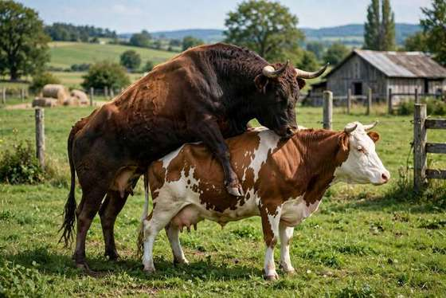
Natural mating in the paddock — simple, but hard to record and control
1
Natural mating — bull running with the herd(Simple and needs no heat detection, but service dates are unknown and disease can spread)
2
Hand mating — controlled natural service(The cow in heat is brought to the bull; date, bull and cow are recorded — the best of natural mating)
3
Artificial insemination (AI)(Semen from a proven bull, exact records, no disease spread, no dangerous bull to keep)
4
Combined system — AI plus clean-up bull(AI for the best cows; a tested bull serves cows that return to heat — common on large farms)
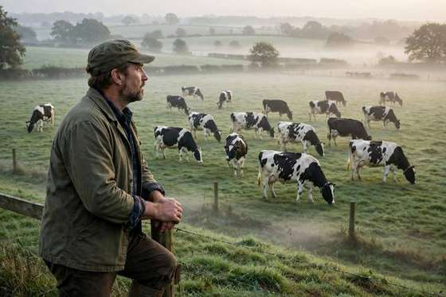
Watching the herd at dawn — heat detection decides breeding success
Selection of Superior Bulls — What to Look For
The bull is half of the herd's genetics. One poor bull can damage a whole calf crop, while one superior bull improves every calf he sires. Never select a bull on size alone — check his pedigree, his health and his fertility.
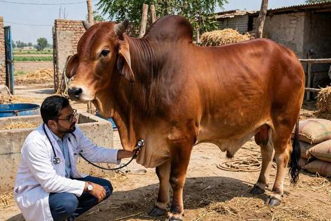
A breeding bull must pass a veterinary examination before use
1
Pedigree and dam's production(His mother should be a high-yielding, fertile cow; his sire should be a proven bull)
2
Body conformation(Strong frame, straight back, deep chest, sound legs and feet — he must stay fit for years)
3
Testicular development(Two well-developed, firm, equal-sized testes; scrotal circumference is linked to fertility)
4
Breeding soundness examination(A veterinarian checks general health, reproductive organs and semen quality before the season)
5
Temperament and libido(A calm bull that shows strong interest in cows in heat serves more cows successfully)
6
Free from disease(Tested free of brucellosis, tuberculosis and venereal diseases before joining the herd)
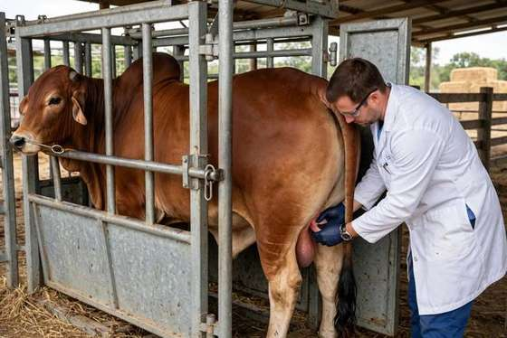
Breeding soundness examination — health, testes and semen checked before the season
Selection of Superior Females — What to Look For
Keep heifers from your best cows and cull the poorest. A female should earn her place in the herd through milk, fertility and health — not sentiment.
1
Milk yield and lactation record(Daughters of high-yielding cows usually milk better; keep lactation records for every cow)
2
Regular fertility(Calves every 12 to 13 months, conceives in one or two services, shows clear heat)
3
Udder and teats(Well-attached, balanced udder with four sound teats — poor udders pass to daughters)
4
Body condition and health(Good growth, strong legs, no chronic disease, no history of difficult calving)
5
Temperament(Calm cows are easier to milk, handle and breed — nervous cows stress the whole herd)
Culling rule: a cow that fails to conceive after three services, has chronic mastitis, or produces far below the herd average should be examined by a veterinarian and considered for culling. Keeping poor producers costs feed and delays genetic progress.
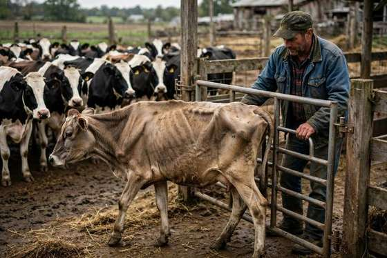
Culling — removing unproductive cows keeps the herd profitable
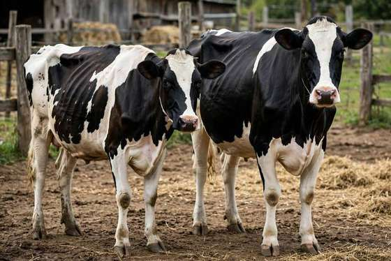
Body condition — thin vs well-conditioned
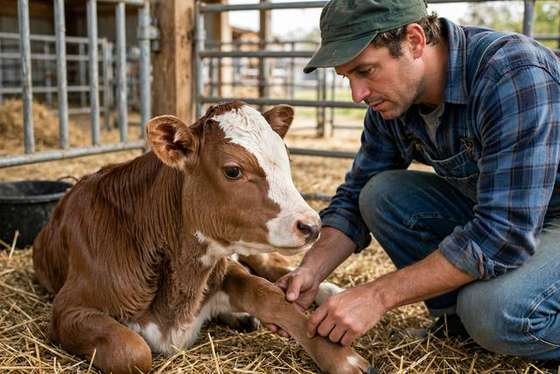
Selecting a healthy heifer calf for the future herd
Breeding Records and Pedigree Management
Without records there is no breeding plan — only guessing. Records are the memory of the herd: they show which cows are fertile, which bulls perform, and which matings must never be repeated.
Daily record keeping — the foundation of every breeding decision
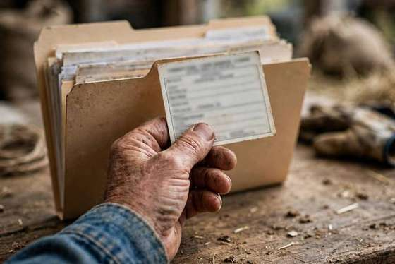
One record card per cow — heat, service, pregnancy, calving
1
Animal identification(Every animal needs a unique ID — ear tag number, name, birth date, breed)
2
Pedigree — sire and dam(Record the father and mother of every calf; a pedigree chart shows three generations)
3
Heat and service record(Heat dates, service dates, method used, bull or semen ID — for every cow)
4
Pregnancy and calving record(Pregnancy diagnosis result, expected calving date, actual calving date, calf sex and birth weight)
5
Production record(Daily or monthly milk yield, lactation length — selection is impossible without it)
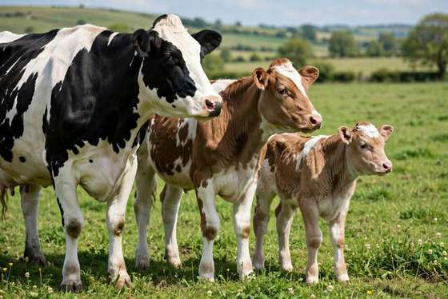
Three generations — pedigree in action
Inbreeding Prevention and Genetic Diversity
Inbreeding means mating closely related animals — a bull to his daughters, or brother to sister. It is the most common hidden cause of poor fertility and weak calves on small farms, because one bull is often used for many years.
Effects of inbreeding: lower conception rates, weaker calves, slower growth, less milk, more stillbirths and more genetic defects.
Change the bull every two to three years — before his daughters reach breeding age.
Never breed a bull to his own daughters or sisters. Use pedigree records to check every mating.
Use AI semen from unrelated bulls to bring fresh genetics into the herd without buying a new bull.
Keep more than one breeding line on larger farms and rotate bulls between groups.
Breeding Season Planning and Bull-to-Cow Ratio
A planned breeding season groups calvings together, so calves are the same age, feeding is simpler, and the farmer can watch all calvings closely. In Pakistan, many farmers plan calving for the cooler months when green fodder is plentiful.
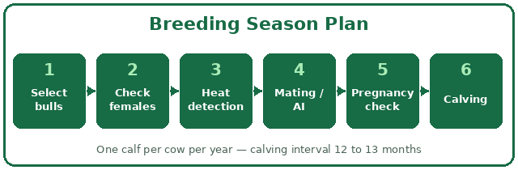
Breeding Season Plan — six steps, one calf per cow per year
Mature bull: about 25 to 30 cows per breeding season.
Young bull (under 3 years): about 15 to 20 cows per season.
Hand mating: one bull can cover more cows because each service is controlled.
Rest and feeding: a working bull needs good feed, minerals and rest days — an overworked, thin bull fails to settle cows.
Target: one calf per cow per year — a calving interval of 12 to 13 months is the sign of good breeding management.
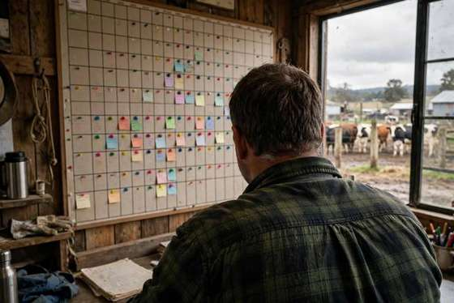
Planning the season — dates, bulls and cows on one board
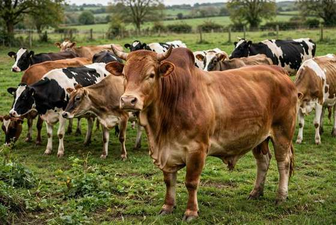
One mature bull serves 25 to 30 cows per season
⚠ Important Tips:
Examine the bull before every breeding season — fertility can change in a year.
Record every heat and every service the same day; memory is not a record.
Check pregnancy 60 days after service — open cows must be rebred quickly.
Replace the bull before his daughters are bred — inbreeding is silent and costly.
Feed breeding animals well — poor nutrition is the most common cause of anoestrus and failed conception.
Frequently Asked Questions
What is breeding management in cattle farming?
Breeding management is the planned control of reproduction in a herd: selecting superior bulls and females, choosing between natural mating and artificial insemination, detecting heat, timing service, keeping breeding records and preventing inbreeding. Good breeding management shortens calving intervals and improves milk, growth and fertility in every generation.
How do I select a good breeding bull?
Choose a bull from a high-producing mother with a strong pedigree, good body conformation, sound legs and feet, well-developed testes and a calm temperament. A breeding soundness examination by a veterinarian, including semen evaluation, should be done before use. Never use a bull of unknown parentage or one related to your cows.
What is the ideal bull-to-cow ratio for natural breeding?
A mature, healthy bull can serve about 25 to 30 cows in a breeding season, and a young bull 15 to 20 cows. Overloading a bull lowers conception rates. In hand-mating systems one bull can cover more cows because each service is controlled and recorded.
Why is inbreeding dangerous in cattle?
Inbreeding — mating closely related animals — increases the chance that harmful recessive genes appear in the calf. It causes lower fertility, weaker calves, slower growth, reduced milk yield and more genetic defects. Keep pedigree records, rotate bulls and never breed a bull to his own daughters.
What records should a farmer keep for breeding?
Record for every animal: identification number, birth date, sire and dam, heat dates, service dates and method (natural or AI), bull or semen used, pregnancy diagnosis result, calving date, calf sex and birth weight, and milk yield. These records guide selection, prevent inbreeding and reveal fertility problems early.
How many cows can one bull serve in a season?
A mature healthy bull can serve about 25 to 30 cows in a breeding season. A young bull should serve only 15 to 20 cows. If one bull must cover more cows, use hand mating so every service is planned, or use artificial insemination for part of the herd.
Should I use natural mating or AI for my cows?
Artificial insemination gives access to semen from proven high-quality bulls, better disease control and exact records, and suits most dairy farms. Natural mating suits herds where heat detection is difficult or AI services are unavailable. Many farms use both: AI for the best cows and a tested bull as a clean-up for repeat breeders.
اچھے سانڈھ کا انتخاب کیسے کریں اور نسل کشی کا ریکارڈ کیوں ضروری ہے؟
اچھا سانڈھ وہ ہے جس کی ماں زیادہ دودھ دیتی ہو، جس کی جسمانی ساخت مضبوط ہو اور جس کا ڈاکٹر سے معائنہ ہو چکا ہو۔ نسل کشی کا ریکارڈ اس لیے ضروری ہے کہ اس سے معلوم ہوتا ہے کون سی گائے کب ہیٹ میں آئی، کس سانڈھ سے ملاپ ہوا اور بچہ کب پیدا ہوگا۔ ریکارڈ کے بغیر قریبی رشتہ داری (ان بریڈنگ) سے بچنا ممکن نہیں۔
Key Takeaway
Good breeding management is simple in principle: select the best bulls and females, control every mating, write down everything, and never let related animals breed. A farmer who follows these four rules will see better calves, more milk and fewer fertility problems within a few years. Follow current local veterinary authority guidance for disease testing and breeding regulations.